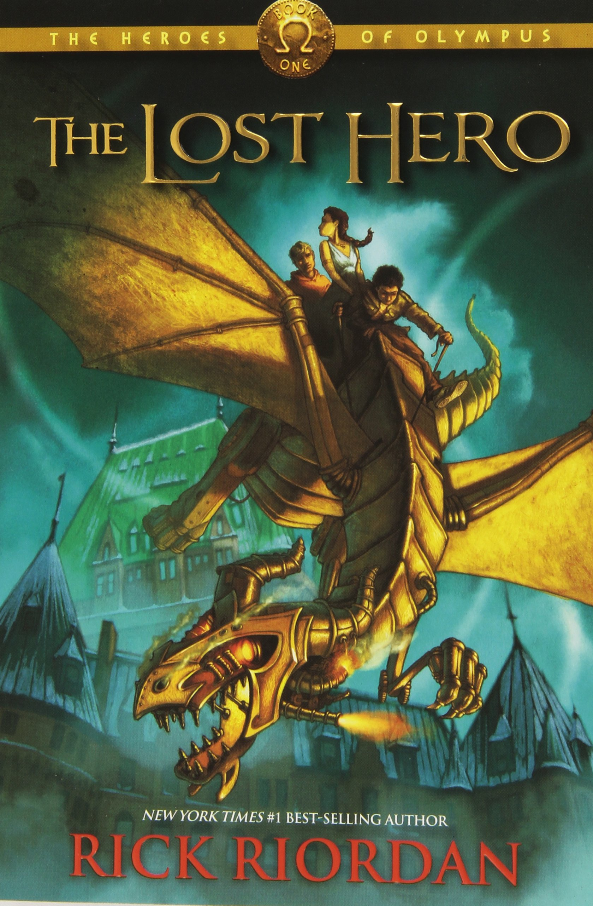

My favorite book is "The Lost Hero" because it is from my favorite book series called the Percy Jackson Series. This book has a very good plot line and is not very repetivie. In the bgaining we get introduced to the main characters Jason, Piper and Leo. They are on the quest to find the missing Percy Jackson and to save Jason's memory aswell as Hera. I am in the middle of the book an I already determined it as my favorite because it is that good. The first main character is Jason who has lost his memory and remembers nothing. He figured out that his father is Zeus and has to go on this quest to get his momory back and free hera. He is alos, the leader of the quest as he is the son zeus. The next main character is POiper who is in love with Jason as through the story Jason and Piper start to date halfway through the quest. Piper is the daugther of the goddes of beauty Aphroditie. Her father is a famous movie star who got kidnapped as she goes on the quest for her father. The last main character is Leo. he is the son of the god of making things Hephaestus. He fixes the magical metal dragon so that they could go on their mission without any problem. He can also summon fire as well as cook things on the quest so their team of 3 can survive.
